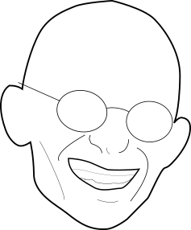

I am a second year PhD student under the supervision of
Ryomei Iwasa
at the University of Copenhagen.
I am part of
GeoTop
and the project
MOSHOT
.
My research interest lies in applying homotopy theory to problems in geometry/algebra/number theory - currently of the motivic kind.
email: jan dot hesse at ku dot dk
office: 04.4.05